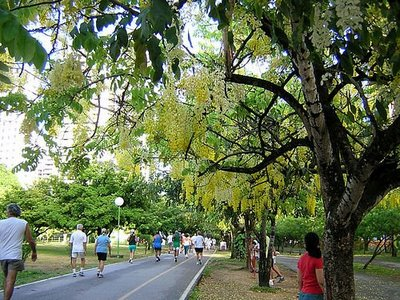
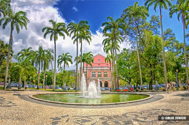

O Parque 13 de Maio, localizado entre as ruas da Saudade, João Lira, Princesa Isabel e do Hospício, na Boa Vista, é a maior concentração de área verde da cidade, com pista de cooper, pequeno zoológico, parque infantil e vários monumentos. Em seu entorno, estão alguns prédios centenários, como o da Faculdade de Direito do Recife (a primeira do país) e a sede da Câmara de Vereadores. Teve sua construção iniciada em 1892, na gestão do governador Alexandre José Barbosa Lima. Em 1939, foi transformado em parque pelo então prefeito Antônio Novaes Filho
O Parque 13 de Maio consiste de uma grande área verde no bairro de Santo Amaro, Recife, Pernambuco, Brasil.
Ao ser inaugurado, media 6,9 hectares, perdendo, depois, terreno para a construção da Biblioteca Pública de Pernambuco e de três instituições educacionais.
História
O local onde o Parque 13 de Maio foi construído era, até o século XIX, um terreno de manguezais pantanoso chamado Ilha do Rato. Seu projeto paisagístico inicial pertenceu ao engenheiro inglês William Martineau e data de 1860.
Em 1875, o engenheiro francês Emile Beringuer elaborou outro projeto para o parque.
Sua construção teve início durante o governo Barbosa Lima (1892 - 1896), porém se estendeu por décadas, e só foi inaugurado em 30 de agosto de 1939, na gestão do prefeito Novaes Filho, para abrigar o III Congresso Eucarístico Nacional.
Parque da Jaqueira

O Parque da Jaqueira está situado no Bairro da Jaqueira, uma área nobre da Cidade, predominantemente residencial, às margens do Rio Capibaribe, confrontando, no lado oposto, com a Praça Souto Filho.
As origens do bairro remontam ao século 17, quando em 1633, suas terras foram palco de um sangrento combate entre as forças comandadas por Felipe Camarão e os holandeses, na sua tentativa frustrada de tomar o Forte do Arraial do Bom Jesus, em Casa Amarela.
Em 1766, o capitão Henrique Martins, então proprietário do sítio, construiu uma capela sob a invocação de Nossa Senhora da Conceição de Ponte d'Uchôa, que ainda hoje ali se ergue, tendo sido o nome, aos poucos, mudado pelo povo para o de Nossa Senhora da Conceição da Jaqueira, em alusão às frondosas árvores que a circundavam. Antes da destinação para Parque o seu espaço conheceu um período de abandono, a capela correndo o risco de arruinar-se. Durante vários anos, sediou o Campeonato Pernambucano de Futebol e a Feira do Comércio e Indústria de Pernambuco FECIN.
Em seus 7 ha, o Parque da Jaqueira reúne de forma contínua dois espaços cronológica e formalmente distintos: o do sítio histórico, cujo ponto focal é a capela ocupando 1,4 ha, e o dos restantes 5,6 ha destinados à prática de esportes, às atividades culturais e à contemplação.
Na década de 1970, uma vez tombada e restaurada, a capela foi emoldurada por um jardim de Burle Marx: um amplo gramado em que um banco de concreto se distende, sinuoso entre as jaqueiras e outras grandes árvores.
Em 1985, o Parque foi inaugurado, incorporando o sítio histórico e consistindo num espaço verdejante ponteado por fruteiras e espécies ornamentais - respectivamente, jaqueiras, mangueiras, jambeiros, sapotizeiros, pitangueiras, entre outras, além de sombreiros, flamboyants, palmeiras imperiais, espatódeas, pau-brasil, xinxás, etc. Nele se distribuem pistas de cooper e bicicross, ciclovias, patinação e outras atividades recreativas, além de instalações de apoio ao usuário. Na verdade, é o parque mais popular da Cidade e um dos mais bem cuidados, devendo-se-lhe a incorporação do cooper aos hábitos do recifense assim como programações culturais - eruditas, folclóricas e cívicas - de âmbito metropolitano.
Desde sua implantação, conta com a Sociedade Protetora dos Amigos da Jaqueira, SODEPAJA, à qual se deve um regulamento de uso do parque juntamente com sua vigilância permanente no que se refere à manutenção. Coube à atual administração municipal o desenvolvimento das gestões junto às esferas federais, no sentido de converter o Parque da Jaqueira em propriedade municipal e, portanto, patrimônio definitivo da comunidade recifense e metropolitana - antes sujeito a regime de comodato, ao sabor da cessão de terceiros.
Praça da República

As origens da Praça da República remontam ao ano de 1639 quando o Conde João Maurício de Nassau Siegen, governador do Brasil Holandês, iniciou o plantio de um parque em torno do Palácio de Friburgo - provavelmente o primeiro jardim renascentista das Américas. Desde então, aquele espaço converteu-se no centro político-cultural do Recife. Ali, Nassau abrigou uma equipe de artistas e homens de ciência, de humanistas, criando ao redor de si um verdadeiro campo de experimentação e lazer, a que não faltou um jardim zoobotânico, hortas e pomares, jardins de flores e plantas medicinais, um campo de jogos de bocha, recantos para encontros galantes e devaneio, grandes espelhos de água onde criava peixes. Alamedas de coqueiros - que Nassau transplantou adultos para o seu parque e no ano seguinte safrejaram - marcavam-lhe os diferentes usos, limitando aquele espaço que veio a ser a primeira área verde do Recife - uma área com inequívoca vocação para praça e centro cívico que se confirma até hoje.
Com a volta de Nassau para a Europa e a expulsão dos holandeses, o parque e seus componentes foram destruídos, conservando-se de pé o palácio, até 1769, servindo de moradia aos governadores. Seu entorno, entretanto, converteu-se num descampado anônimo. Mais tarde receberia os nomes: Praça do Palácio Velho, Campo do Erário, Campo de Honra e, por fim, Campo dos Mártires, quando testemunhou o enforcamento dos líderes republicanos da Revolução de 1817.
Coube ao Conde da Boa Vista iniciar a restauração daquele espaço com a construção do palácio do governo, em 1841. Em 1850 inaugurava-se o Teatro de Santa Isabel, projetado e executado por Louis L. Vauthier. Com a vinda de D.Pedro II e a estada da família real no palácio, em 1859, o local passou a ser chamado de Campo das Princesas, sendo no ano seguinte cogitado o seu ajardinamento, segundo um projeto de William Martineau.
Em 1874, seria executada uma proposta de Emile Beringer inspirada no paisagismo inglês, com canteiros irregulares e um coreto no centro, todo o conjunto protegido por um gradil. Cerca de um ano após a proclamação da república recebeu o nome de Praça da República, que conserva até os dias atuais.
A década de 1930 assistiu à inauguração do Palácio da Justiça e reforma da praça pelo paisagista Burle Marx que conservou os dois eixos ortogonais do projeto de Beringer, surgindo no lugar do antigo coreto um lago com uma fonte, demarcados pelas palmeiras imperiais, tendo estátuas dispersas no seu entorno.
A última reforma da Praça da República ocorreu em 1999, introduzindo-se pequenas mudanças no projeto de Burle Marx, sendo mantidos os eixos com palmeiras imperiais e os caminhos diagonais que levam aos importantes edifícios e vias ali presentes: os palácios do Governo e da Justiça, o Teatro de Santa Isabel, o Liceu de Artes e Ofícios e a Secretaria da Fazenda - um dos marcos da arquitetura moderna de Pernambuco. A Praça apresenta três lances de jardins que se desenvolvem em direção do rio, privilegiada pelo amplo horizonte e pela vista do casario do Bairro do Recife - uma paisagem que acentua o caráter contemplativo desta praça multissecular, à sombra do seu expressivo arboreto e sob a sedução das palmeiras e do imenso e velho baobá.
Local: Bairro de Santo Antônio
Área: 20,336,44 m2
Projetos identificados: Parque de Friburgo - Pieter Post (1637-42); William Martineau (1860); Praça e Campo das Princesas - Emile Beringer (1875); Autor não identificado (1918); Praça da República - Roberto Burle Marx (1936)
O Parque Estadual Dois Irmãos tem uma área de 384,42 hectares, sendo 14 hectares ocupados pelo Zoológico do Recife. A reserva do Parque, considerada uma das maiores áreas de Mata Atlântica de Pernambuco, proporciona aos visitantes conhe-cer o ecossistema, suas plantas e seus animais nativos, como preguiças, sagüis, quatis, capivaras, além de uma enorme variedade de pássaros.
No zoológico vivem cerca de 600 animais entre aves, répteis e mamíferos distribuídos em 120 espécies, tanto nativas do Brasil quanto exóticas.
Vinculado à Secretaria de Meio Ambiente e Sustentabilidade do Estado, o Parque Dois Irmãos representa os zoos do Norte e Nordeste e se destaca pelos eventos pioneiros e atividades inovadoras nas áreas de educação ambiental e reprodução de animais em cativeiro.
Aqui o conhecimento da natureza é adquirido através da vivência e do contato direto com a fauna, fazendo com que o zoo deixe de ser “vitrine de animais” para se transformar em centro de conservação da natureza.